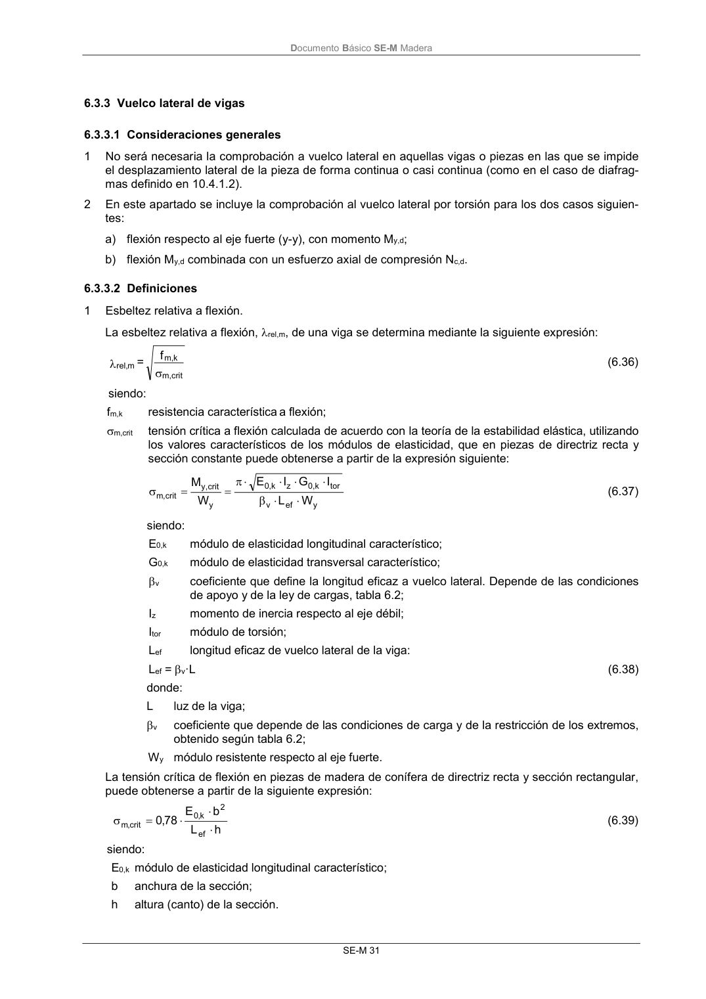

DB-SE-M · 6.3.3.2 Definiciones · versión 2019-12-20 · capa oficial
Formatos: JSON compacto · Markdown · PDF fuente
Ámbito del documento · texto del ámbito · documento y tablas
ID técnico a0082 · PDF pág. 37 · jerarquía no validada por persona · contrastado con el literal de la página 37 (candidato tipográfico); no validado por persona · padre: raíz
6.3.3.2 Definiciones 1 Esbeltez relativa a flexión. La esbeltez relativa a flexión, rel,m, de una viga se determina mediante la siguiente expresión: crit m, k m, m rel, f = (6.36) siendo: fm,k resistencia característicaa flexión; m,crit tensión crítica a flexión calculada de acuerdo con la teoría de la estabilidad elástica, utilizando los valores característicos de los módulos de elasticidad, que en piezas de directriz recta y

PDF fuente redistribuible: copia fiel enlazada en esta página (SHA256 verificado).